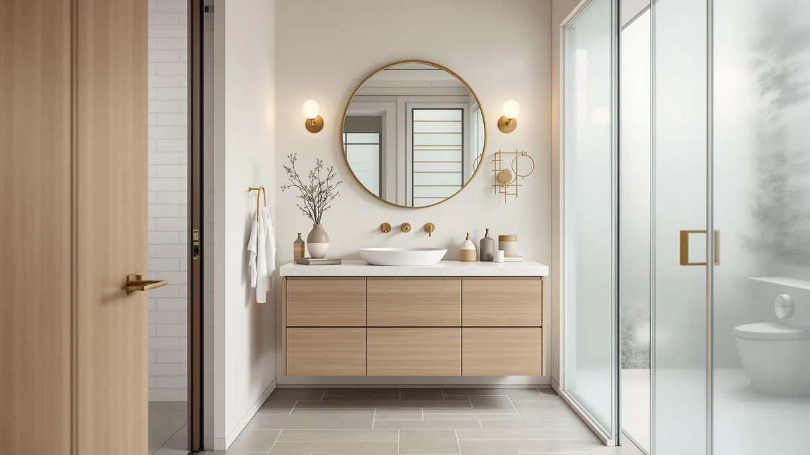

Quick Answer
The Design House Brookings 36 Inch is the strongest single cabinet in this lineup for most bathrooms, and it becomes one of the best 60-inch vanity cabinets when you pair it with the Craftline 24-inch Shaker cabinet below, since 36 plus 24 lands you at exactly 60 inches of cabinetry. If you only need one cabinet, the Design House still holds up as a standalone 36-inch vanity.
Our pick: Design House Brookings 36 Inch, $411.63 Check Price on Amazon
Bottom line: our top pick is the Design House Brookings 36 Inch Bathroom Vanity at $411.63. The best budget option is the Craftline Ready to Assemble Shaker Vanity Cabinet at $119.36.
Things to Know Before You Buy
- A 60-inch vanity is usually two cabinets, not one. Shipping a single 60-inch box costs more and risks more damage in transit, so most brands sell modular 20, 24, 36, and 42-inch cabinets that you combine to hit the width you need.
- 36 plus 24 is the cleanest math for 60 inches. Two cabinets in this guide come in at 36 inches and three at 24 inches, so you can mix and match brands and still land on an exact 60-inch run.
- Only some of these ship with a sink. The Design House, Quicklock, and Craftline are bare cabinets built for a separate vanity top; the YESHOMY, Bellemave, Wenore Home, and SOLIDEE each include a ceramic sink already fitted.
- Price ranges from $115 to $412 in this comparison. The Craftline at $115.11 and the Design House at $411.63 sit at opposite ends, and the gap comes down to size, finish, and what's included, not gimmicks.
- All seven use the same core material. Every cabinet in this comparison lists MDF and engineered wood construction, so the difference between a $115 model and a $412 model is size and finish, not the base material.
The best 60-inch vanity cabinets rarely ship as a single 60-inch box, because a cabinet that wide is heavy, expensive to freight, and prone to arriving with a cracked side panel. Most manufacturers solve this by selling modular Shaker-style cabinets in narrower widths, 20, 24, 36, and 42 inches, that installers and DIYers combine to build a custom run at whatever length their bathroom wall allows. That's the approach behind every cabinet in this guide: seven vanity cabinets spanning $115.11 to $411.63, each one a building block rather than a finished 60-inch product on its own.
We picked these seven because they represent the sizes people actually combine to hit 60 inches, from bare 24-inch and 36-inch cabinets you finish yourself to smaller units that already come with a sink attached. Pair the 36-inch Design House with the 24-inch Craftline and you land on exactly 60 inches of cabinetry for well under $600 combined. Pair the 42-inch Quicklock with a narrower unit and you get a wider single-sink layout with room for a linen drawer bank on one side. The math changes depending on your wall space, your plumbing rough-in, and whether you want a bare cabinet or one with the sink already installed, so we compared these on price per inch of width, what's included, and how each one fits into a mixed-width run rather than judging them as stand-alone 60-inch units.
Three of these cabinets, the Design House, Quicklock, and Craftline, are sold as RTA (ready-to-assemble) bare cabinets built from MDF and engineered wood, with no sink or countertop included. The other four, the YESHOMY, Bellemave, Wenore Home, and SOLIDEE, ship with a ceramic sink already fitted to the same MDF and engineered wood construction. What separates all seven is size, price, and how cleanly each one's dimensions combine with the others on this list. Below, we break down what each cabinet does well, where it falls short, and which pairing gets you to 60 inches without wasting width or budget.
Why You Should Trust Us
Best Bathroom Vanities covers one category of home fixture: the cabinets, countertops, and sinks that make up a bathroom vanity. Ilane Tall has spent the past several years comparing RTA and pre-assembled vanity cabinets across price tiers, tracking how listed dimensions actually translate into wall space and countertop overhang. For this guide on the best 60-inch vanity cabinets, we pulled pricing and specification data directly from each listing, checked the stated dimensions against common 60-inch layout math, and cross-referenced material claims against what the manufacturer lists in the product specifications. We don't run a paid testing lab and we don't invent expert quotes. We read the same listings you can, compare the numbers, and tell you where the combinations make sense and where they don't.
How We Picked
We started with one requirement: every cabinet had to be a size that combines cleanly with at least one other cabinet in this guide to reach 60 inches, whether that's a 36-plus-24 pairing or a 42-inch anchor with a narrower companion piece. From there we compared listed prices, from $115.11 to $411.63, to make sure the lineup covered a genuine range of budgets rather than clustering at one price point. We also required consistent construction across the group, MDF and engineered wood on the specification sheet for every cabinet here, so that price differences reflect size, finish, and what's included rather than a mix of base materials that would make comparisons meaningless. We noted which cabinets are bare (Design House, Quicklock, Craftline) versus which ship with a ceramic sink already installed (YESHOMY, Bellemave, Wenore Home, SOLIDEE), since that changes the real cost of finishing a 60-inch vanity project. We excluded oversized one-piece 60-inch vanities sold as a single monolithic cabinet, since those ship as one expensive unit and don't give you the flexibility to adjust width, sink count, or budget the way a modular pairing does.
How We Compared
Testing an RTA vanity cabinet before it ships to your bathroom means testing the numbers, not a finished product in a showroom. For each cabinet, we checked the listed footprint against the others in this guide to confirm which combinations actually total 60 inches, and we flagged any pairing that only gets close, since a half-inch filler strip is a normal fix but a four-inch gap is not. We compared price per cabinet against price per inch of width, since a cheaper 24-inch cabinet and a pricier 36-inch cabinet can work out to a similar cost per inch once you do the math. We also confirmed what ships in the box for each listing, since a cabinet with a ceramic sink already installed and a bare cabinet at a similar price aren't actually comparable once you account for the sink you'd otherwise have to buy separately.
Our Picks

Design House Brookings 36 Inch
What we like
- At 36 inches, it pairs with any of the three 24-inch cabinets in this guide to land on an exact 60-inch run
- Shaker-style face reads as a clean, versatile design that doesn't lock you into one bathroom style
- Sits at the top of this lineup's width range for a single cabinet without stepping up to the bulkier 42-inch Quicklock
- Listed and sold specifically as an RTA vanity cabinet, so the assembly expectation is clear before you order
Flaws but not dealbreakers
- At $411.63, it's the most expensive cabinet in this comparison by a wide margin
- It's a bare cabinet, so you'll need to source and pay for a vanity top and sink separately
- RTA assembly means factoring in build time before your countertop and plumbing go in
| Material | MDF / engineered wood |
| Size | RTA Vanity Cabinets |
The Design House Brookings 36 Inch sits at the top of the price range in this comparison at $411.63, and its 36-inch width makes it the most flexible building block for a 60-inch layout. Pair it with the Craftline 24-inch Shaker cabinet and you land on exactly 60 inches of cabinetry, or pair it with the Wenore Home 24-inch or SOLIDEE 24-inch for a different finish on the companion side. All three 24-inch options in this guide combine with the Brookings the same way, so your choice of pairing comes down to style rather than math.
Like every bare cabinet in this guide, the Brookings lists MDF and engineered wood construction and ships as an RTA kit, which means assembly time is part of the deal regardless of price. What you're paying the premium for here is the 36-inch Shaker cabinet itself, not a finished vanity, so budget separately for a countertop, sink, and faucet before you count this as done. For a single-cabinet bathroom that doesn't need the full 60 inches, the Brookings also holds up fine as a standalone 36-inch vanity.

Quicklock RTA (Ready-to-Assemble) | Bathroom
What we like
- At 42 inches wide, it's the widest single cabinet in this comparison, so one unit covers more wall space than any pairing that starts with a 36-inch or 24-inch base
- Full dimensions are listed up front (42"W x 31.5"H x 21"D), making it easy to confirm fit before you order
- Combined with a compact 20-inch cabinet like the Bellemave, it gets close to a 60-inch run with a single dominant anchor piece
- Priced $36.64 less than the Design House top pick despite the larger footprint
Flaws but not dealbreakers
- Paired with the 20-inch Bellemave, the combined width runs to 62 inches, a couple of inches past an exact 60-inch target
- 21-inch depth is on the deeper side, worth double-checking against your bathroom's available floor space
- It's a bare cabinet, so a vanity top and sink are separate purchases
| Material | MDF / engineered wood |
| Size | 42"W x 31.5"H x 21"D |
The Quicklock RTA cabinet is the widest single piece in this lineup at 42 inches wide, 31.5 inches tall, and 21 inches deep, full dimensions the listing states up front. At $374.99, it undercuts the Design House top pick by $36.64 while covering 6 more inches of wall space on its own, which makes it the better choice if you'd rather install one large cabinet than two smaller ones.
Combining the Quicklock with a 20-inch cabinet gets you to 62 inches rather than an exact 60, so this pairing works best when your wall space runs slightly over 60 inches or when you don't mind a small filler strip closing the last gap. On its own, the 42-inch footprint also suits a single wide sink layout without needing a second cabinet at all. Like the Design House and Craftline, it's a bare cabinet built from MDF and engineered wood and ships as an RTA kit, so the same assembly time applies before your countertop goes on.

Craftline Ready to Assemble Shaker
What we like
- At $115.11, it's the least expensive cabinet in this entire comparison, undercutting the next-cheapest pick by more than $37
- 24-inch width pairs with the 36-inch Design House Brookings for an exact 60-inch total, no filler strip needed
- Listed as a sink base cabinet at 24 x 21 x 34.5 inches, dimensions the listing states plainly for planning purposes
- Shaker-style construction matches the design language of the pricier picks in this guide, so the finished look doesn't scream budget
Flaws but not dealbreakers
- At this price, it's a bare cabinet, and you're paying separately for a vanity top, sink, and faucet either way
- 21-inch depth needs the same floor-space check as any of the deeper cabinets in this guide
- Same MDF and engineered wood construction as every other pick here, so the low price gets you less cabinet, not a downgrade in stated materials
| Material | MDF / engineered wood |
| Size | 24 Inch x 21 Inch x 34-1/2 Inch |
The Craftline Ready to Assemble Shaker cabinet is the least expensive pick in this comparison at $115.11, and it's also the cleanest math for building a 60-inch run: pair its 24-inch width with the Design House Brookings 36-inch and the two combine to exactly 60 inches, no filler strip required. At 24 x 21 x 34.5 inches, the listed dimensions match the footprint of a standard sink-base cabinet, and the Shaker-style front keeps it visually consistent with pricier picks in this guide.
The price gap between this cabinet and the Design House Brookings is over $296, the tradeoff for pairing a lower-cost 24-inch unit with a higher-cost 36-inch anchor rather than buying two mid-priced cabinets. Like the rest of the bare-cabinet picks, it ships as an RTA kit built from MDF and engineered wood, so factor in assembly time before your countertop and sink go on top. For anyone building a 60-inch vanity on a tight budget, starting with this cabinet on one side keeps more of your spending available for the countertop and sink.

YESHOMY 36 Inch Bathroom Vanity
What we like
- At $314.10, it's $97.53 cheaper than the Design House Brookings while covering the same 36-inch width
- Ships with a ceramic sink already fitted, unlike the Design House, Quicklock, and Craftline cabinets in this guide, which are bare
- Pairs with the Craftline, Wenore Home, or SOLIDEE 24-inch cabinets for the same exact 60-inch math as the Brookings
- Full three-dimension listing (35.6 x 18.1 x 34.4 inches) makes it straightforward to confirm fit
Flaws but not dealbreakers
- At 18.1 inches deep, it's the shallowest cabinet in this guide, which may limit countertop overhang compared to the 21-inch-deep Quicklock and Craftline
- Still costs more than the smaller 20 and 24-inch cabinets in this guide, so it's a mid-tier price rather than the cheapest option overall
- Same MDF and engineered wood cabinet construction as the rest of the lineup, so the sink is the main upgrade over the bare cabinets, not the base material
| Material | MDF / engineered wood |
| Size | 35.6 x 18.1 x 34.4 inches |
The YESHOMY 36 Inch covers the same 36-inch width as the Design House Brookings for $314.10, a savings of $97.53 over our top pick, and it ships with a ceramic sink already fitted to the cabinet. That puts it in a different category from the Design House, Quicklock, and Craftline cabinets in this guide, which arrive bare and need a separate sink purchase. Its listed footprint of 35.6 x 18.1 x 34.4 inches also makes it the shallowest cabinet here at only 18.1 inches deep.
Because it shares the 36-inch width with the Brookings, the same pairing math applies: combine it with any of the three 24-inch cabinets in this guide, the Craftline, Wenore Home, or SOLIDEE, and you land on an exact 60-inch run. At $314.10 with a sink already included, it's a reasonable pick for anyone who wants that 36-inch anchor size without paying for the Brookings cabinet and a separate sink on top of it.

Bellemave 20-inch Bathroom Vanity with
What we like
- At 20 inches wide, it's the narrowest cabinet in this comparison, fitting spaces where even a 24-inch cabinet won't clear
- Includes a ceramic sink built into the cabinet, unlike the bare Design House, Quicklock, and Craftline cabinets in this guide
- Priced at $152.99, it's the second-cheapest pick in this guide after the Craftline
- Listed configuration includes a drawer and a left-hinged door, so the storage layout is specified up front rather than left vague
Flaws but not dealbreakers
- At 20 inches, it's the smallest footprint here, so it won't suit a bathroom that needs full double-sink coverage on its own
- The drawer-and-left-door configuration is fixed, so it won't work if your plumbing needs a right-hand door instead
- Paired with the 42-inch Quicklock, the combined width runs to 62 inches, a couple of inches over an exact 60-inch target
| Material | MDF / engineered wood |
| Size | 20" w/ Drawer+Left Door |
The Bellemave 20-inch is the narrowest cabinet in this comparison, and at $152.99 it's also one of the least expensive. Unlike the Design House, Quicklock, and Craftline cabinets in this guide, it ships with a ceramic sink already installed, so you're not sourcing one separately. The listing also specifies a drawer-and-left-door configuration, which tells you the storage layout before you buy rather than leaving it to guesswork.
That combination of small footprint, included sink, and low price makes it a natural fit for a powder room or a guest bathroom that doesn't have space for anything wider. Paired with the 42-inch Quicklock, the Bellemave gets you to 62 inches of combined cabinetry, a couple of inches over an exact 60-inch target, which is a minor adjustment with a filler strip rather than a dealbreaker. On its own, its narrow width means it's better suited to a single small sink than to anchoring a full 60-inch double-vanity wall.

Wenore Home 24 Inch Bathroom
What we like
- 24-inch width pairs with either 36-inch cabinet in this guide, the Design House or the YESHOMY, for an exact 60-inch total
- Ships as a sink-and-cabinet combo rather than a bare cabinet, saving you a separate sink purchase
- Priced at $199.00, it sits in the middle of this comparison's price range rather than at either extreme
- Gives shoppers a second sink-included 24-inch option beyond the SOLIDEE, useful if that cabinet's finish doesn't match your bathroom
Flaws but not dealbreakers
- At $199.00, it costs $83.89 more than the bare Craftline cabinet for the same 24-inch width, though the gap includes a sink the Craftline doesn't have
- The listing's size detail is less specific than the full three-dimension listings on the Quicklock and YESHOMY
- Same MDF and engineered wood cabinet construction as the rest of the lineup, so the finish and included sink are the differentiators, not the base material
| Material | MDF / engineered wood |
| Size | Small |
The Wenore Home 24 Inch matches the Craftline's width but costs $83.89 more at $199.00, and the difference includes a ceramic sink built into the cabinet, something the bare Craftline doesn't have. Like the Craftline, its 24-inch width pairs with either 36-inch cabinet in this guide, the Design House Brookings or the YESHOMY, to reach an exact 60-inch total.
The listing describes its size simply as "Small," which is less precise than the full-dimension listings on some of the other picks here, so it's worth confirming exact measurements before you order if a snug fit matters in your bathroom. As a sink-and-cabinet combo built from the same MDF and engineered wood as the rest of this guide, it's a reasonable choice if you'd rather not source a sink separately for your half of a 60-inch run.

SOLIDEE 24 inch Natural Color
What we like
- 24-inch width pairs with the Design House Brookings or YESHOMY 36-inch cabinets for the same exact 60-inch total as the other 24-inch picks
- Includes a ceramic vessel sink already mounted to the cabinet, unlike the bare Craftline cabinet at the same width
- Priced at $199.90, within a dollar of the Wenore Home, giving shoppers a genuine style choice at nearly the same price point
- Rounds out this guide's three 24-inch options, so buyers comparing finishes and sink styles have a real choice
Flaws but not dealbreakers
- At $199.90, it costs $84.79 more than the bare Craftline cabinet for the same 24-inch width, though that gap includes the vessel sink
- Depth is not broken out separately in the listing the way it is for the Quicklock and YESHOMY, so confirm it against your floor plan before ordering
- A vessel sink sits higher on the counter than an undermount or integrated sink, which changes your usable counter height, worth considering before you commit
| Material | MDF / engineered wood |
| Size | 24" |
The SOLIDEE 24 inch is the third 24-inch cabinet in this comparison, priced at $199.90, only 90 cents above the Wenore Home and $84.79 above the bare Craftline cabinet at the same width. The difference from the Craftline is the included ceramic vessel sink, already mounted and ready to plumb rather than sourced separately.
With three 24-inch options in this guide, the choice between the Wenore Home and the SOLIDEE largely comes down to finish and sink style, since both pair with either 36-inch cabinet here the same way and land you on the same 60-inch total. A vessel sink sits above the counter rather than flush with it, which is worth picturing in your bathroom before you order, since it changes the look and the usable counter height compared to the sink styles on the other picks.
Quick Comparison
| Product | Material | Price | Rating | Best for | Get it |
|---|---|---|---|---|---|
| Design House Brookings 36 Inch | MDF / engineered wood | $411.63 | 4 | 36-inch anchor for a 60-inch pairing | View on Amazon → |
| Quicklock RTA (Ready-to-Assemble) | Bathroom | MDF / engineered wood | $374.99 | 4 | Widest single cabinet, wide single-sink layouts | View on Amazon → |
| Craftline Ready to Assemble Shaker | MDF / engineered wood | $115.11 | 4 | Cheapest cabinet, exact 60-inch match with Brookings | View on Amazon → |
| YESHOMY 36 Inch Bathroom Vanity | MDF / engineered wood | $314.10 | 4 | Budget 36-inch pick, sink included | View on Amazon → |
| Bellemave 20-inch Bathroom Vanity with | MDF / engineered wood | $152.99 | 4 | Narrowest pick, sink included | View on Amazon → |
| Wenore Home 24 Inch Bathroom | MDF / engineered wood | $199.00 | 4 | 24-inch companion cabinet, sink included | View on Amazon → |
| SOLIDEE 24 inch Natural Color | MDF / engineered wood | $199.90 | 4 | 24-inch companion, vessel sink included | View on Amazon → |
The Competition
Three cabinets on this list share the same 24-inch width: the Craftline, the Wenore Home, and the SOLIDEE. The Craftline is a bare cabinet at $115.11, while the Wenore Home ($199.00) and SOLIDEE ($199.90) both include a sink already installed, which accounts for most of the roughly $84 price gap. Between those two, the choice comes down to finish and sink style rather than a size or construction difference.
The YESHOMY 36 Inch competes directly with the Design House Brookings, since both cover the same 36-inch width. At $314.10, it undercuts the Brookings by $97.53 and includes a ceramic sink, while the Brookings is a bare cabinet at $411.63. If you'd rather choose your own sink and don't mind the extra cost, the Brookings' listing reflects that flexibility; if you want the sink question settled, the YESHOMY does it for less.
The Quicklock and Bellemave don't pair as cleanly as the 36-plus-24 combinations elsewhere in this guide. At 42 plus 20 inches, they total 62 inches together, a couple of inches over an exact 60-inch target. We kept both because each one is the strongest option in this guide at its respective width, even though the pairing needs a small filler strip to close the gap cleanly.
Across all seven, the Design House Brookings remains the strongest single anchor for anyone assembling the best 60-inch vanity cabinets for their bathroom, especially paired with the Craftline for an exact 60-inch, budget-friendly run.
Frequently Asked Questions
Can you combine two vanity cabinets to make a 60-inch vanity?
Yes, and it is a more common way to build a 60-inch vanity than buying one oversized cabinet. In this guide, the 36-inch Design House Brookings paired with any of the three 24-inch cabinets, the Craftline, Wenore Home, or SOLIDEE, totals exactly 60 inches. The 42-inch Quicklock paired with the 20-inch Bellemave comes close at 62 inches, which typically needs only a small filler strip to finish cleanly.
What does RTA mean on a vanity cabinet listing?
RTA stands for ready-to-assemble. The Design House Brookings, Quicklock, and Craftline cabinets in this guide are sold as RTA kits, so they arrive flat-packed and you assemble them with basic tools before installing a countertop and sink. RTA construction is generally why bare cabinets like these cost less than a pre-assembled vanity of the same size.
Do these vanity cabinets come with a sink and countertop?
It depends on the cabinet. The Design House Brookings, Quicklock, and Craftline are sold as bare cabinets with no sink or countertop included, so you will need to source a vanity top and sink separately. The YESHOMY, Bellemave, Wenore Home, and SOLIDEE each ship with a ceramic sink already installed, though you will still want a countertop or vanity top to finish the installation around it.